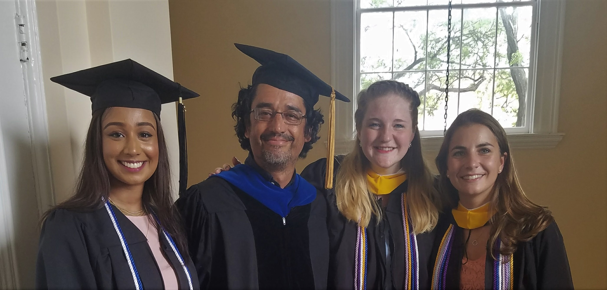

Research Overview
My research is in statistical inference in medical imaging. Most medical imaging tasks can be viewed as the estimation of a parameter (such as the size of a tumor) or detection of a lesion under various types of uncertainty. My work tries to optimize performance of medical imaging systems on these tasks. Currently my research focuses on using statistical detection theory to optimize acquisition and reconstruction in magnetic resonance imaging (MRI) for reconstructions generated using neural networks.
Optimizing Acquisition and Reconstruction of undersampled MRI for signal detection using neural networks
Efforts to accelerate magnetic resonance imaging (MRI) require evaluation of how the acceleration affects the clinical tasks. In this work, we use statistical detection of signals as a way of optimizing the methods to accelerate MRI. The project combines psychophysical studies of humans detecting tumors with mathematical models to develop model observers that can predict human performance in the detection tasks including search. These observers are then used to optimize both the acquisition and reconstruction of undersampled MRI images. The reconstruction methods include neural networks and data agreement which introduce interesting questions in optimization and machine learning. This work is done in collaboration with student researchers at Manhattan College, and consultants at the University of Southern California, University of California, Santa Barbara, University of Wisconsin, Madison and New York University. This project was previously funded by NIH R-15 grant 1R15EB029172-01 and is currently being funded by NIH R-15 grant 2R15EB029172-02 . The code from the recently submitted of published peer-reviewed articles from my group can be found in our MoMI Manhattan College GitHub page . A couple sample videos of presentations by research students are from a poster presentation at ISMRM 2021 by Rachel Roca on UNet Architectures and a talk at SPIE Medical Imaging 2021 by Alexandra O'Neill on Observer Modeling ".
If you are a student at Hofstra University and are interested in this research, come and talk to me about it. I am always open to talk to students about research opportunities.
For a list of publications, see my C. V. and Google Scholar Citation Report.
 Graduates of the MoMI group.